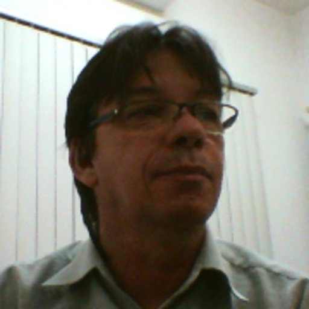

Colaboradores Principais

Dra. Susanne Rath (raths@iqm.unicamp.br)
Laboratório de Bioanalítica Paracelsus
Departamento de Química Analítica
Instituto de Química, Universidade Estadual de Campinas (UNICAMP)
http://www.lbp.iqm.unicamp.br

Dr. José Roberto Guimarães (jorober@fec.unicamp.br)
Departamento de Saneamento e Ambiente
Faculdade de Engenharia Civil Arquitetura e Urbanismo, Universidade Estadual de Campinas (UNICAMP)

Dr. Marco Aurélio Zezzi Arruda (zezzi@iqm.unicamp.br)
Grupo de Espectrometria, Preparo de Amostras e Mecanização (GEPAM)
Departamento de Química Analítica
Instituto de Química, Universidade Estadual de Campinas (UNICAMP)

Dr. Elias De Barros Santos
Docente no Instituto de Ciência e Tecnologia
Universidade Federal de São Paulo, Campus São José dos Campos.
http://www.unifesp.br/campus/sjc/

Dr. Laurent Barbiero
Institute of Research for Development
234 - Geosciences Environnement Toulouse (GET).

Dr. David Amouroux
Laboratoire de Chimie Analytique Bio-Inorganique et Environnement (LCABIE)
Institute of Analytical Sciences and Physical-Chemistry for the Environment and Materials (IPREM) - UMR 5254 CNRS -
UPPA.

Dr. Amauri Antonio Menegário
Centro de Estudos Ambientais (CEA)
Universidade Estadual Paulista (UNESP)